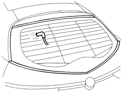

7035OA CHECK FOR ABSENCE OF FIXED WINDOW INFILTRATIONS (WINDSCREEN AND REAR SCREEN)
- Path
- Test > 70 FITTINGS > 7035 BODYSHELL WINDOWS AND SMALL WINDOWS > 7035O GLASS TESTS ON BODY AND WINDOWS > 7035OA CHECK FOR ABSENCE OF FIXED WINDOW INFILTRATIONS (WINDSCREEN AND REAR SCREEN)
- Kind
- test / check procedure
- Applies to
- all engines; all production periods
- Interactive page
- https://sloeber94.github.io/elrnDB-aBrrSpdr/en/#/946001149
Applies to: all engines; all production periods
Apply a solution of soapy water to the entire perimeter of the glass.
From inside the passenger compartment, blow through with compressed air along the entire perimeter, moving the trims to the side and the top, if necessary.

Visually inspect for any bubbles of air on the outer surface: this makes it possible to locate any areas where the sealant is not sufficient or damaged.
If there is a lack of sealant on the vertical pillars, the pillar trim can be moved and rubber type sealant can be injected from the inside.
If there is a lack of sealant on the top section, the roof lining can be moved and rubber type sealant can be injected from the inside.
If there is a lack of sealant on the bottom section, the trim at the base of the (front) windscreen or the rear parcel shelf (for the rearscreen) can be moved and rubber type sealant can be injected from the inside.
If there is insufficient sealant in widespread areas, the overall seal of the window cannot be guaranteed and therefore it has to be removed and the windscreen or the rearscreen must be completely resealed.